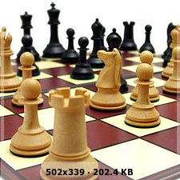

Ajedrez en tiempos de cuarentena ....
Jugar ajedrez es fácil: aprende en pocos minutos
El ajedrez es un juego de mesa de dos jugadores que controlan un ejercito. El objetivo es darle jaque mate al Rey del contrario. El juego consta de:
- 1 Tablero de 64 casillas que alternan los colores
- 8 Peones por cada bando
- 2 Torres por cada bando
- 2 Caballos por cada bando
- 2 Alfiles por cada bando
- 1 Dama por cada bando
- 1 Rey por cada bando

Entrenando en cuarentena: existen millones de ejercicios y libros para estudiar
Puedes resolver el ejercio del día en lichess.org dando click en la imagen a continuación:
Juega y pon en práctica tus entrenamientos:
lichess.org